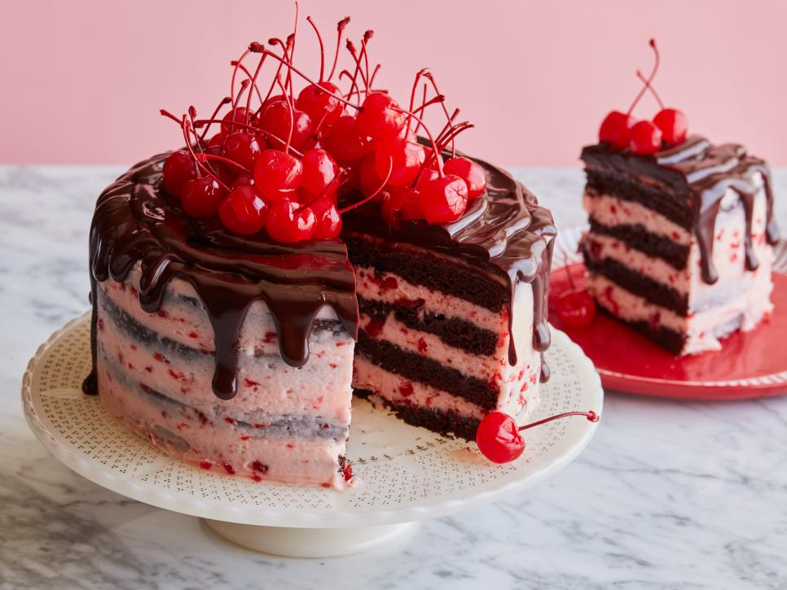

Bolo Floresta Negra
Ingredientes
Bolo
| Açúcar |
Meia xícara (chá) |
| Farinha de trigo |
Meia xícara (chá) |
| Cacau em Pó |
2 colheres (sopa) |
| Ovos |
6 |
| cherry cola |
Meia colher (sopa) |
| Fermento em pó |
Meia colher (sopa) |
| Rum |
Meia xícara (chá) |
| Chantilly |
500 g |
| Cerejas picadas |
1 xícara (chá) |
| Cerejas inteiras |
| Chocolate Meio Amargo |
200 g |
Modo de preparo
- Em uma batedeira, bata os ovos e o açúcar por 5 minutos ou até dobrar de volume.
- Desligue a batedeira e adicione a farinha, o Cacau em pó, o fermento e misture delicadamente.
- Despeje a massa em uma forma redonda (25 cm de diâmetro), untada com manteiga e polvilhada com farinha e leve ao forno médio (180°C), preaquecido, por cerca de 40 minutos. Desenforme e deixe esfriar.
- Depois de frio, corte o bolo ao meio e umedeça com o rum.
- Recheie com uma parte do chantilly e as cerejas. Em seguida, cubra com o chantilly restante e com raspas do Chocolate NESTLÉ CLASSIC. Decore com as cerejas inteiras e leve à geladeira por 30 minutos para resfriar. Sirva.